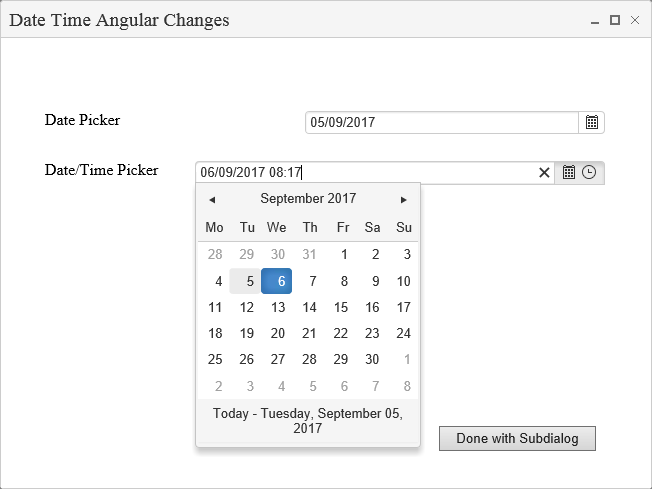
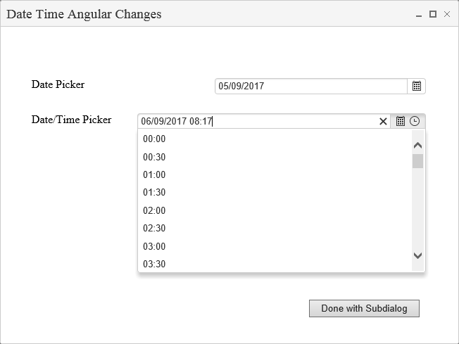
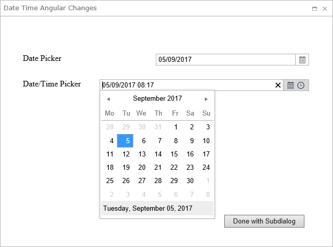

In this Article I will run through how to enable AngularJS when using a DatePicker Component.
Table Of Contents
- List
- Grid
- Date Pickers (this)
- Charts
- Custom - Checkers
- Page Source
- ...
On a Web Form add a Date Picker Component.
| LogicBase.Components.FormBuilder.AdvancedComponents.DatePickerComponent |
|---|
| https://www.symantec.com/connect/articles/datepicker |
| LogicBase.Components.FormBuilder.AdvancedComponents.DateTimePickerComponent |
|---|
| https://www.symantec.com/connect/articles/datetimepicker |
Edit the settings and go to the "Appearance" tab where you can check the "Use Angular JS" box.

Fill in the other properties where appropriate.
Then run your app in Debug to see the differences.
New


Original

The time doesn't change much.
As you can see there is different styling, more rounded corners and some more information.